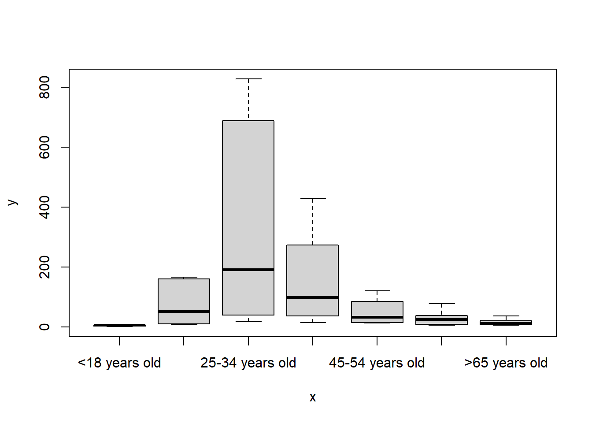
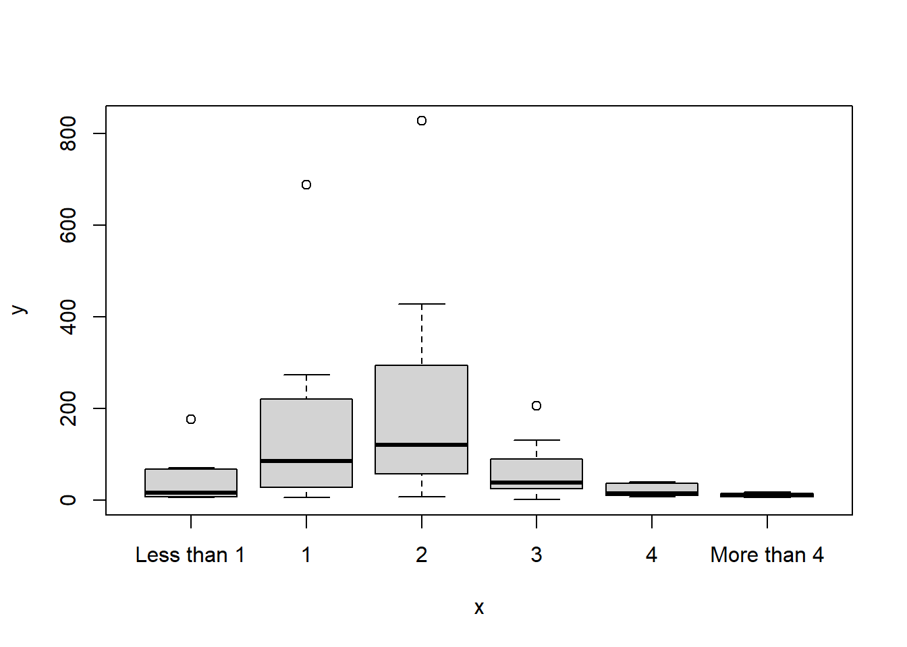

library(dplyr)My first R Markdown script
1. Prepare to work
1.1 Set the working directory
Refer to Section 1.2 for this, Part 3.1.
1.2 Load the libraries
1.3 Load the data
data <- read.csv("~/Fake/GACTT_RESULTS_ANONYMIZED_v2.csv", header=TRUE)2. Preliminary observations and preparation of the data
2.1 Preliminary descriptive statistics
## head(data, 5) ## Code not run because too lengthy
## str(data) ## Code not run because too lengthy
## summary(data) ## Code not run because too lengthy2.2 Transformation of the data
2.2.1 Change of class
data$What.is.your.age. <- as.factor(data$What.is.your.age.)
data$How.many.cups.of.coffee.do.you.typically.drink.per.day. <- as.factor(data$How.many.cups.of.coffee.do.you.typically.drink.per.day.)
data$Where.do.you.typically.drink.coffee. <- as.factor(data$Where.do.you.typically.drink.coffee.)
## summary(data) ## Code not run because too lengthylevels(data$What.is.your.age.)[1] "" "<18 years old" ">65 years old" "18-24 years old"
[5] "25-34 years old" "35-44 years old" "45-54 years old" "55-64 years old"levels(data$How.many.cups.of.coffee.do.you.typically.drink.per.day.)[1] "" "1" "2" "3" "4"
[6] "Less than 1" "More than 4"levels(data$Where.do.you.typically.drink.coffee.) [1] ""
[2] "At a cafe"
[3] "At a cafe, At home"
[4] "At a cafe, At home, At the office"
[5] "At a cafe, At home, At the office, On the go"
[6] "At a cafe, At home, On the go"
[7] "At a cafe, At home, On the go, At the office"
[8] "At a cafe, At the office"
[9] "At a cafe, At the office, At home"
[10] "At a cafe, At the office, At home, On the go"
[11] "At a cafe, At the office, On the go"
[12] "At a cafe, At the office, On the go, At home"
[13] "At a cafe, On the go"
[14] "At a cafe, On the go, At home"
[15] "At a cafe, On the go, At home, At the office"
[16] "At a cafe, On the go, At the office"
[17] "At home"
[18] "At home, At a cafe"
[19] "At home, At a cafe, At the office"
[20] "At home, At a cafe, At the office, On the go"
[21] "At home, At a cafe, On the go"
[22] "At home, At a cafe, On the go, At the office"
[23] "At home, At the office"
[24] "At home, At the office, At a cafe"
[25] "At home, At the office, At a cafe, On the go"
[26] "At home, At the office, On the go"
[27] "At home, At the office, On the go, At a cafe"
[28] "At home, None of these"
[29] "At home, On the go"
[30] "At home, On the go, At a cafe"
[31] "At home, On the go, At a cafe, At the office"
[32] "At home, On the go, At the office"
[33] "At home, On the go, At the office, At a cafe"
[34] "At the office"
[35] "At the office, At a cafe"
[36] "At the office, At a cafe, At home"
[37] "At the office, At a cafe, At home, On the go"
[38] "At the office, At a cafe, On the go"
[39] "At the office, At a cafe, On the go, At home"
[40] "At the office, At home"
[41] "At the office, At home, At a cafe"
[42] "At the office, At home, At a cafe, On the go"
[43] "At the office, At home, On the go"
[44] "At the office, At home, On the go, At a cafe"
[45] "At the office, On the go"
[46] "At the office, On the go, At a cafe"
[47] "At the office, On the go, At a cafe, At home"
[48] "At the office, On the go, At home"
[49] "At the office, On the go, At home, At a cafe"
[50] "None of these"
[51] "None of these, At a cafe"
[52] "On the go"
[53] "On the go, At a cafe"
[54] "On the go, At a cafe, At home"
[55] "On the go, At a cafe, At home, At the office"
[56] "On the go, At a cafe, At the office"
[57] "On the go, At a cafe, At the office, At home"
[58] "On the go, At home"
[59] "On the go, At home, At a cafe"
[60] "On the go, At home, At a cafe, At the office"
[61] "On the go, At home, At the office"
[62] "On the go, At home, At the office, At a cafe"
[63] "On the go, At the office"
[64] "On the go, At the office, At a cafe, At home"
[65] "On the go, At the office, At home"
[66] "On the go, At the office, At home, At a cafe"2.2.2 Data selection
data2 <- data[,c("Submission.ID",
"What.is.your.age.",
"How.many.cups.of.coffee.do.you.typically.drink.per.day.",
"Where.do.you.typically.drink.coffee.")] data2 <- subset(data2, What.is.your.age. != "")
data2$What.is.your.age. <- droplevels(data2$What.is.your.age.)
data2 <- subset(data2, How.many.cups.of.coffee.do.you.typically.drink.per.day. != "")
data2$How.many.cups.of.coffee.do.you.typically.drink.per.day. <- droplevels(data2$How.many.cups.of.coffee.do.you.typically.drink.per.day.)3. Summarize and plot the data
3.1 Create summary table
data3 <- data2 %>%
group_by(What.is.your.age., How.many.cups.of.coffee.do.you.typically.drink.per.day.) %>%
summarize(Count = n())`summarise()` has grouped output by 'What.is.your.age.'. You can override using
the `.groups` argument.data3# A tibble: 40 × 3
# Groups: What.is.your.age. [7]
What.is.your.age. How.many.cups.of.coffee.do.you.typically.drink.per.…¹ Count
<fct> <fct> <int>
1 <18 years old 1 6
2 <18 years old 2 7
3 <18 years old 3 1
4 <18 years old Less than 1 5
5 >65 years old 1 21
6 >65 years old 2 37
7 >65 years old 3 17
8 >65 years old 4 7
9 >65 years old Less than 1 5
10 >65 years old More than 4 7
# ℹ 30 more rows
# ℹ abbreviated name: ¹How.many.cups.of.coffee.do.you.typically.drink.per.day.str(data3)gropd_df [40 × 3] (S3: grouped_df/tbl_df/tbl/data.frame)
$ What.is.your.age. : Factor w/ 7 levels "<18 years old",..: 1 1 1 1 2 2 2 2 2 2 ...
$ How.many.cups.of.coffee.do.you.typically.drink.per.day.: Factor w/ 6 levels "1","2","3","4",..: 1 2 3 5 1 2 3 4 5 6 ...
$ Count : int [1:40] 6 7 1 5 21 37 17 7 5 7 ...
- attr(*, "groups")= tibble [7 × 2] (S3: tbl_df/tbl/data.frame)
..$ What.is.your.age.: Factor w/ 7 levels "<18 years old",..: 1 2 3 4 5 6 7
..$ .rows : list<int> [1:7]
.. ..$ : int [1:4] 1 2 3 4
.. ..$ : int [1:6] 5 6 7 8 9 10
.. ..$ : int [1:6] 11 12 13 14 15 16
.. ..$ : int [1:6] 17 18 19 20 21 22
.. ..$ : int [1:6] 23 24 25 26 27 28
.. ..$ : int [1:6] 29 30 31 32 33 34
.. ..$ : int [1:6] 35 36 37 38 39 40
.. ..@ ptype: int(0)
..- attr(*, ".drop")= logi TRUE3.2 Change the order of the factors
levels(data3$What.is.your.age.)[1] "<18 years old" ">65 years old" "18-24 years old" "25-34 years old"
[5] "35-44 years old" "45-54 years old" "55-64 years old"data3$What.is.your.age. <- factor(data3$What.is.your.age., levels = c("<18 years old",
"18-24 years old",
"25-34 years old",
"35-44 years old",
"45-54 years old",
"55-64 years old",
">65 years old"))
levels(data3$What.is.your.age.)[1] "<18 years old" "18-24 years old" "25-34 years old" "35-44 years old"
[5] "45-54 years old" "55-64 years old" ">65 years old" levels(data3$How.many.cups.of.coffee.do.you.typically.drink.per.day.)[1] "1" "2" "3" "4" "Less than 1"
[6] "More than 4"data3$How.many.cups.of.coffee.do.you.typically.drink.per.day. <- factor(data3$How.many.cups.of.coffee.do.you.typically.drink.per.day., levels = c("Less than 1",
"1",
"2",
"3",
"4",
"More than 4"))
levels(data3$How.many.cups.of.coffee.do.you.typically.drink.per.day.)[1] "Less than 1" "1" "2" "3" "4"
[6] "More than 4"3.3 Plot the data
plot(x = data3$What.is.your.age., y = data3$Count)
plot(x = data3$How.many.cups.of.coffee.do.you.typically.drink.per.day., y = data3$Count)
4. Save the data
4.1 Save as an R object
save(data3, file = "data.Rdata")4.2 Save as a CSV document
write.csv(data3, "data3.csv", row.names = FALSE)